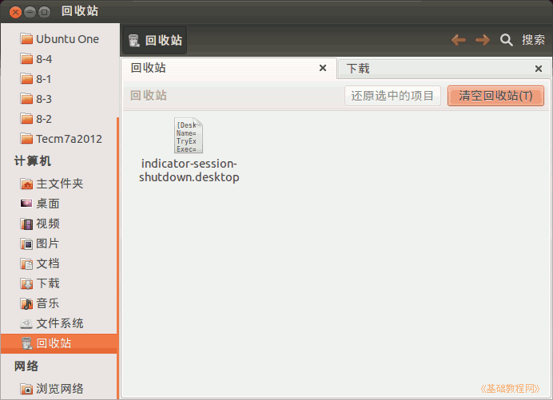

2011-2012 第一学期七年级电脑操作教学设计
作者：TeliuTe 来源：基础教程网
十六、学会复制删除文件(回收站) 返回目录 下一课
（一）教学设计
1、学习目标：学会复制删除文件(回收站)
2、注意事项：用新标签打开回收站，下载完还要把属性改过来，上节学过的查看属性里
3、教学过程：
1）教师准备学案和板书；
2）学生整队进入，开机抄黑板上笔记；
3）教师讲解板书演示操作；
4）学生打指法、日志、完成操作；
5）教师打勾记录学生指法成绩，检查日志和操作；
注：学生抄完笔记就开始打指法、日志，老师讲完后再继续完成；
（二）板书设计(学生笔记)
第16课 学会复制删除文件(回收站)
1.校园网，软件，linax,ind,点左键，链接另存为，保存。
2.最小化，打开主文件夹。
3.右键性标签打开左面，下载，回收站
4.复制粘贴到桌面，属性，权限，允许。
5.下载的移动到回收站。
操作图示：

（三）课后记 2012-10-30 12:35
--
先把日志和指法都打完，然后再讲操作
要不后面再打指法，把操作又忘记了
--
回收站检查完以后，再把删除练一下
在新标签打开的操作，在文件夹里复习一下
--
本来还想学剪切，发现这两个学完已经足够了
后面抽背的时间都不够，下节再接着来
--
讲解的时候，把意思要讲出来
这节是接着上节继续文件操作，学习复制和删除
--
先到校园网里下载一个ind开头的文件，存到下载文件夹里
这两个用红粉笔划出来，要对应上才行
--
下载下来后，复制到桌面上，这是第一个操作
然后用完了就删除到回收站里，这是第二个操作
--
笔记太长了，第一条省略了，自己抄的时候把它们都补全
然后一步一步操作，对着笔记操作，不要跳
--
容易出错的是下载的时候找不到位置，这时候先点一下下载
学生对文件管理还不熟悉，下载完了不知到哪儿去找
--
再有下载的时候还没找到ind就开始下载，结果文件名不对
还有点左键的，会直接当文本文件打开了
--
下载的文件是一个关机的快捷方式，把属性改一下就会变红
最后可以当作关机练习，看一下自己的操作是否是正确的
--
--
上完课，直接关窗户准备下班
还好在记随笔，忽然听到眼保健操，才想起后面还有两节。。。
返回目录 下一课
本教程由86团学校TeliuTe制作|著作权所有
基础教程网：http://teliute.org/
美丽的校园……
转载和引用本站内容，请保留作者和本站链接。